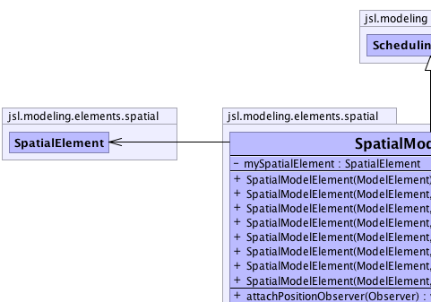
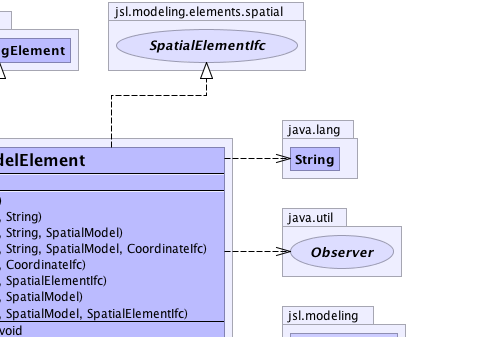
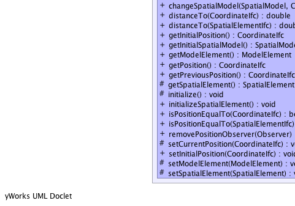
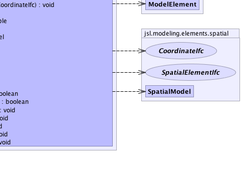

jsl.modeling.ModelElement
jsl.modeling.SchedulingElement
jsl.modeling.elements.spatial.SpatialModelElement
jsl.modeling.ModelElement
jsl.modeling.SchedulingElement
jsl.modeling.elements.spatial.SpatialModelElement
|
||||||||||
| PREV CLASS NEXT CLASS | FRAMES NO FRAMES | |||||||||
| SUMMARY: NESTED | FIELD | CONSTR | METHOD | DETAIL: FIELD | CONSTR | METHOD | |||||||||
java.lang.Object
public class SpatialModelElement
SpatialModelElement represents a ModelElement within a SpatialModel. A SpatialModelElement does not have the ability to move within the SpatialModel. Sub-classes may implement this behavior. A SpatialModelElement has a fixed location within the SpatialModel
|  |  |
|  |  |
| Nested Class Summary |
|---|
| Nested classes/interfaces inherited from class jsl.modeling.ModelElement |
|---|
ModelElement.TimedUpdateEventAction, ModelElement.WarmUpEventAction |
| Field Summary | |
|---|---|
private SpatialElement |
mySpatialElement
|
| Constructor Summary | |
|---|---|
SpatialModelElement(ModelElement parent)
Creates a Location2D with (0.0, 0.0) position. |
|
SpatialModelElement(ModelElement parent,
CoordinateIfc position)
Creates a Location2D with at the coordinates of the supplied position. |
|
SpatialModelElement(ModelElement parent,
SpatialElementIfc position)
Creates a Location2D with at the coordinates of the supplied position. |
|
SpatialModelElement(ModelElement parent,
SpatialModel spatialModel)
Creates a Location2D with the given parent and SpatialModel2D. |
|
SpatialModelElement(ModelElement parent,
SpatialModel spatialModel,
SpatialElementIfc element)
Creates a Location2D with the given parent and SpatialModel2D. |
|
SpatialModelElement(ModelElement parent,
java.lang.String name)
Creates a Location2D with (0.0, 0.0) position. |
|
SpatialModelElement(ModelElement parent,
java.lang.String name,
SpatialModel spatialModel)
Creates a Location2D with the given parent and SpatialModel2D. |
|
SpatialModelElement(ModelElement parent,
java.lang.String name,
SpatialModel spatialModel,
CoordinateIfc coordinate)
Creates a Location2D with the given parent and SpatialModel2D. |
|
| Method Summary | |
|---|---|
void |
attachPositionObserver(java.util.Observer observer)
Implementor of this interface should allow Observers to be attached. |
void |
changeSpatialModel(SpatialModel spatialModel,
CoordinateIfc coordinate)
Changes the spatial model for this element and places the element at the supplied coordinate within the new spatial model. |
double |
distanceTo(CoordinateIfc coordinate)
This is a "convenience" method for getting the distance from this element to the supplied coordinate within the underlying spatial model |
double |
distanceTo(SpatialElementIfc element)
This is a "convenience" method for getting the distance from this element to the supplied element within the underlying spatial model Requirement: The elements must be in the same spatial model. |
CoordinateIfc |
getInitialPosition()
|
SpatialModel |
getInitialSpatialModel()
Returns the spatial model that should hold this element at the beginning of each replication of a simulation |
ModelElement |
getModelElement()
Gets the ModelElement associated with this spatial element May be null |
CoordinateIfc |
getPosition()
|
CoordinateIfc |
getPreviousPosition()
|
protected SpatialElement |
getSpatialElement()
Returns the spatial element associated with this spatial model element |
protected void |
initialize()
This method should be overridden by subclasses that need actions performed to initialize prior to a replication. |
void |
initializeSpatialElement()
This method should be called to initialize the spatial element prior to running a simulation |
boolean |
isPositionEqualTo(CoordinateIfc coordinate)
Returns true if the position of this element is the same as supplied coordinate within the underlying spatial model. |
boolean |
isPositionEqualTo(SpatialElementIfc element)
Returns true if the position of this element is the same as the position of the supplied element within the underlying spatial model. |
void |
removePositionObserver(java.util.Observer observer)
Remove the observer from this PositionIfc |
protected void |
setCurrentPosition(CoordinateIfc currentPosition)
|
void |
setInitialPosition(CoordinateIfc coordinate)
Sets the initial position of the element. |
protected void |
setModelElement(ModelElement modelElement)
|
protected void |
setSpatialElement(SpatialElement spatialElement)
Sets the underlying SpatialElement |
| Methods inherited from class java.lang.Object |
|---|
clone, equals, finalize, getClass, hashCode, notify, notifyAll, wait, wait, wait |
| Methods inherited from interface jsl.modeling.elements.spatial.SpatialElementIfc |
|---|
getObserverState, getSpatialModel |
| Methods inherited from interface jsl.utilities.IdentityIfc |
|---|
getId, getName |
| Field Detail |
|---|
private SpatialElement mySpatialElement
| Constructor Detail |
|---|
public SpatialModelElement(ModelElement parent)
parent -
public SpatialModelElement(ModelElement parent,
java.lang.String name)
parent - name -
public SpatialModelElement(ModelElement parent,
CoordinateIfc position)
parent - position -
public SpatialModelElement(ModelElement parent,
SpatialElementIfc position)
parent - position -
public SpatialModelElement(ModelElement parent,
java.lang.String name,
SpatialModel spatialModel)
parent - name - spatialModel -
public SpatialModelElement(ModelElement parent,
SpatialModel spatialModel)
parent - spatialModel -
public SpatialModelElement(ModelElement parent,
SpatialModel spatialModel,
SpatialElementIfc element)
parent - spatialModel - element -
public SpatialModelElement(ModelElement parent,
java.lang.String name,
SpatialModel spatialModel,
CoordinateIfc coordinate)
parent - name - spatialModel - coordinate - | Method Detail |
|---|
public final CoordinateIfc getPosition()
getPosition in interface PositionIfcgetPosition in interface SpatialElementIfcpublic final CoordinateIfc getInitialPosition()
getInitialPosition in interface SpatialElementIfcpublic final CoordinateIfc getPreviousPosition()
getPreviousPosition in interface SpatialElementIfcpublic final double distanceTo(CoordinateIfc coordinate)
SpatialElementIfc
distanceTo in interface SpatialElementIfcpublic final boolean isPositionEqualTo(CoordinateIfc coordinate)
SpatialElementIfc
isPositionEqualTo in interface SpatialElementIfcpublic final double distanceTo(SpatialElementIfc element)
SpatialElementIfc
distanceTo in interface SpatialElementIfcpublic final boolean isPositionEqualTo(SpatialElementIfc element)
SpatialElementIfc
isPositionEqualTo in interface SpatialElementIfcpublic final SpatialModel getInitialSpatialModel()
SpatialElementIfc
getInitialSpatialModel in interface SpatialElementIfc
public final void changeSpatialModel(SpatialModel spatialModel,
CoordinateIfc coordinate)
SpatialElementIfc
changeSpatialModel in interface SpatialElementIfcpublic final ModelElement getModelElement()
SpatialElementIfc
getModelElement in interface SpatialElementIfcpublic void attachPositionObserver(java.util.Observer observer)
SpatialElementIfc
attachPositionObserver in interface SpatialElementIfcpublic void removePositionObserver(java.util.Observer observer)
SpatialElementIfc
removePositionObserver in interface SpatialElementIfcpublic void setInitialPosition(CoordinateIfc coordinate)
SpatialElementIfc
setInitialPosition in interface SpatialElementIfcpublic void initializeSpatialElement()
SpatialElementIfc
initializeSpatialElement in interface SpatialElementIfcprotected void initialize()
ModelElement
initialize in class ModelElementprotected final SpatialElement getSpatialElement()
protected final void setSpatialElement(SpatialElement spatialElement)
spatialElement - protected void setModelElement(ModelElement modelElement)
protected final void setCurrentPosition(CoordinateIfc currentPosition)
|
||||||||||
| PREV CLASS NEXT CLASS | FRAMES NO FRAMES | |||||||||
| SUMMARY: NESTED | FIELD | CONSTR | METHOD | DETAIL: FIELD | CONSTR | METHOD | |||||||||